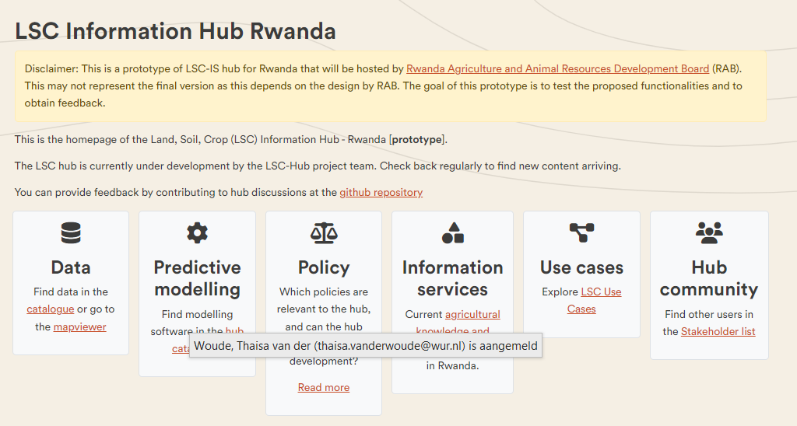
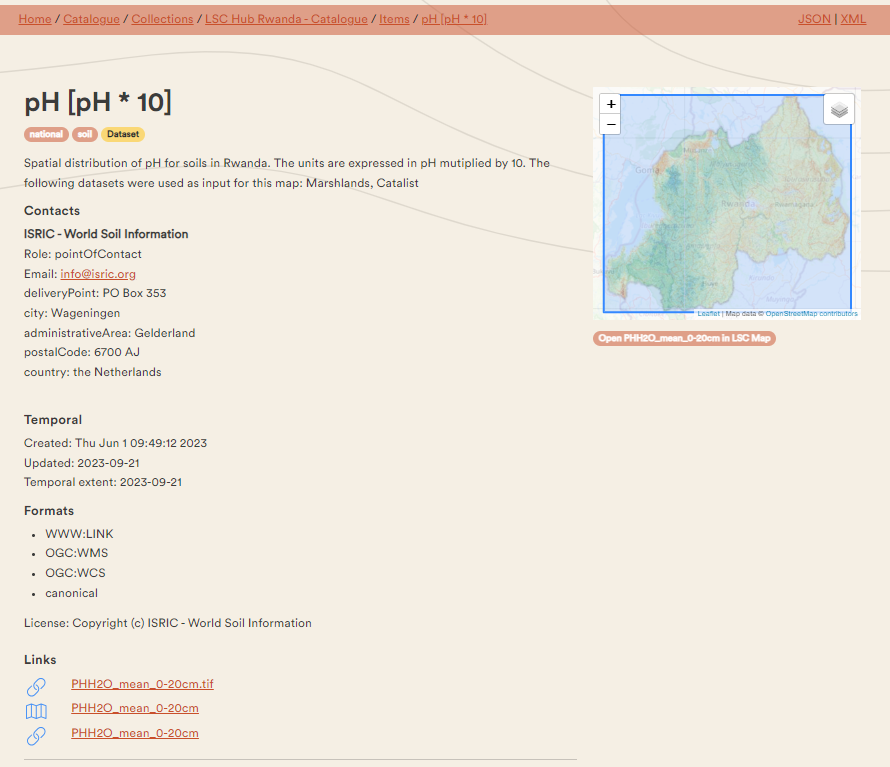

User Guideline LSC Hubs
This document is a guideline for the components of a LSC Hub.
A typical LSC hub consists of 3 components:
- A homepage providing a user welcome, project attribution and documentation;
- A catalogue which provides a search interface on the resources relevant to the hub;
- A map viewer section for easy access to data.
Moreover, there are 2 services important for the LSC hub: - Providing feedback to improve the LSC-hub - Providing Additional information to enrich the LSC-hub.
Homepage
The entry point of the hub is a webpage with general information about the project. The LSC-hub for Rwanda can be accessed at https://lsc-hubs.org/hubs/rwanda/.
When arriving on the homepage, you can see 6 sections: - Data to find data in the catalogue or go to the mapviewer - Predictive modelling to find modelling software in the hub catalogue. - Policy Which policies are relevant to the hub, and can the hub support policy development? - Information Services to find agricultural knowledge and innovation systems in Rwanda - Use Cases to explore the use cases of the LSC hub - Hub community to find other users in the stakeholder list

Exercise 1: Explore the homepage of the LSC hub. Click on the links, and explore which info is in there.
Catalogue
The central catalogue contains references to all relevant resources in the hub. The catalogue of Rwanda can be reached by clicking under DATA on Catalogue or directly by https://rwanda.lsc-hubs.org/

When you click on submit, the available records will appear.

Resources are categorised into:
- Datasets
- Software
- Model
- Services (Web services, APIs, SMS, phone and onsite services)
The catalogue allows the filtering of keywords. The 3 main keywords are: 1. category ( such as soil, crop, etc.), 2. spatial scope (such as Global, National, district, etc. ), 3. the type (such as dataset, software, etc).
Second, any other keyword linked to the resource can be used to search in the catalogue, for example, land use or crop yield. This depends on which keywords are given to the resources.
Exercise 2: Try the keywords. Type in the search bar various keywords, such as soil or Land use or click on the keywords on the side.

For each record, a number of metadata properties are provided, such as abstract, used datasets, keywords, usage constraints, and contact information.
Some records link directly to the map vizualization component. Under the image, it will say: Open record in the LSC map and you will be directed to the map viewer.
Exercise 3: Explore the records. Click, after searching on keywords, on one of the appeared records and explore the provided information. Click on the links in the records

Map viewer
Spatial data can be viewed and compared in a web-based map viewer. The map viewer can be accessed on the homepage of the LSC hub, under DATA and then click on go the map viewer. The map viewer can also directly be accessed at https://maps.lsc-hubs.org/#lsc-rwanda

You can open one of the existing map contexts via the related maps menu. Or create a map from scratch by combining datasets found in the catalogue or from other sources.
A listing of available functionalities:
- The Sidebar
Explore map datashows a listing of datasets that can be added to the map via a catalogue search or directly from a configured map service. If the panel is empty, select an alternative map fromrelated maps.Uploadprovides the option to open a dataset from the local computer. Note that this data is not uploaded to a server, so this data is not shared with colleagues. You can also referenceweb datafrom this panel.- As soon as layers are loaded on the map, you can set the order of the layers, view a legend of the layer, zoom to its extent, set its opacity and view the metadata of the data.
- The vertical toolbar on the top right
- Zoom in and out, and back to a full world zoom
- Zoom to your current location
- Split the map to the left and right, to compare 2 datasets
- Measure a distance on the map
- The top menu
- Get more information
aboutthe map viewer - Select one of a set of
related maps Map settingsallows you to select a different base mapHelpopens the viewer documentation- A
Storyis a series of views on various datasets with comments Sharegenerates a link to the current map, which you can share with colleagues
- Get more information
Feedback
Notice that every page or resource on the hub provides an option to provide feedback and/or ask a question related to the content. Contributions to the hub require a Github login.